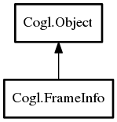

Cogl.FrameInfo – doc Reference Manual
Packages
doc
Cogl
FrameInfo
FrameInfo
get_frame_counter
get_output
get_presentation_time
get_refresh_rate
FrameInfo
Object Hierarchy:

Description:
public
class
FrameInfo
:
Object
Namespace:
Cogl
Package:
doc
Content:
Creation methods:
protected
FrameInfo
()
Methods:
public
int64
get_frame_counter
()
Gets the frame counter for the
Onscreen
that corresponds to this frame.
public
weak
Output
get_output
()
Gets the
Output
that the swapped frame was presented to.
public
int64
get_presentation_time
()
Gets the presentation time for the frame.
public
float
get_refresh_rate
()
Gets the refresh rate in Hertz for the output that the frame was on at the time the frame was presented.
Inherited Members:
All known members inherited from class Cogl.Object
value_set_object